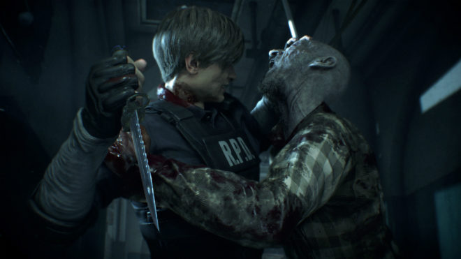

Такой поджанр экшенов, как survival-action, в последние несколько лет завоевал значительную популярность. Одним из первых его представителей была игра в жанре survival-horror Resident Evil, хоть она и была линейной, тогда как действие более современных игр на выживание типа Fortnite обычно происходит в открытом мире, а игроки получают возможности и ресурсы для создания инструментов, оружия и укрытий с целью выжить максимально долго.